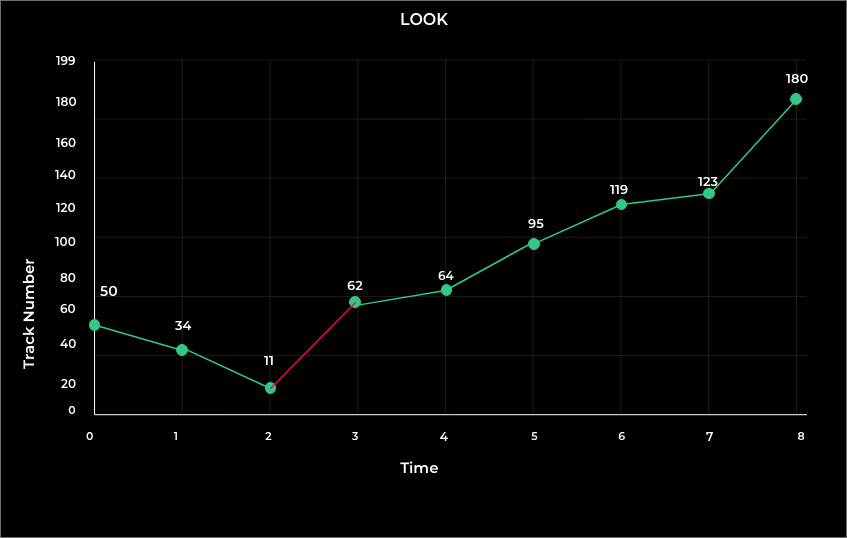

The LOOK disk scheduling algorithm is a variation of the SCAN algorithm for disk scheduling.
It is used to reduce the amount of time it takes to access data on a hard disk drive by minimizing the seek time between read/write operations.
The LOOK algorithm operates by scanning the disk in a specific direction, but instead of going all the way to the end of the disk before reversing direction like the SCAN algorithm, it reverses direction as soon as it reaches the last request in the current direction.
Example :
In our case 11 and 180 are the last services.
(THM) = (50-11) + (180-11) = 39 + 169 = 208
(THM) = 208 tracks
Seek Time = THM * Seek rate = 208 * 5ms
Seek Time = 1040 ms

Advantages & Disadvantages:
1. It does not cause the head to move till the ends of the disk when there are no requests to be serviced.
2. It provides better performance as compared to the SCAN Algorithm.
3. It does not lead to starvation.
The Following are the Disadvantages:
1. There is an overhead of finding the end requests.
2. It causes a long waiting time for the cylinders just visited by the head.